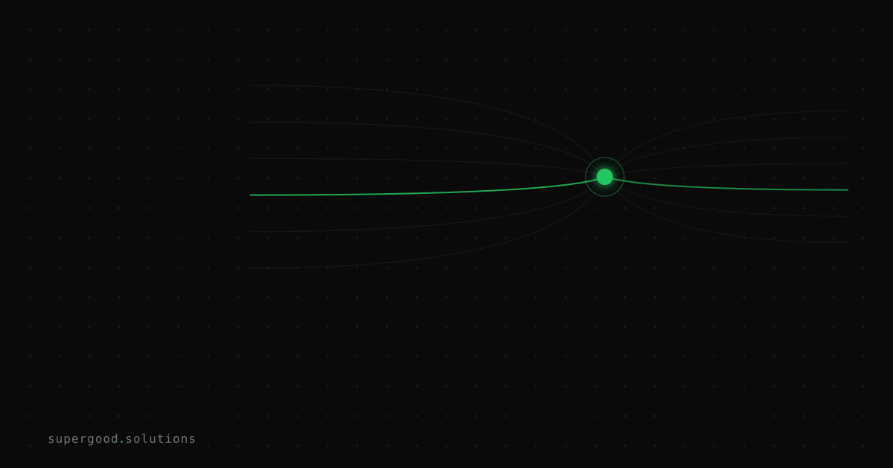

The AI Vendor You Pick Today Could Own You Tomorrow
TL;DR: Models are commoditizing, so labs are moving up the stack into orchestration, memory, and agent workflows — and that layer is where real switching costs live. Most procurement teams are still negotiating hard on the one thing that's already cheap to switch (tokens) while giving away the thing that isn't (accumulated state).
Key Insight
The standard enterprise take on AI lock-in is that it's overblown: models are interchangeable, you can swap a provider with a config change, and price competition keeps everyone honest. That take is correct about the model layer and completely wrong about where you actually get stuck.
Arvind Narayanan and Akash Kapur made the structural version of this argument in July, in Up the Stack: How AI's Escape From the Commodity Trap Risks Enterprise Lock-in. Their thesis: frontier inference has all the properties of a bad business — undifferentiated product, similar capital structures across competitors, low switching costs, freely adjustable prices. Competition pushes inference pricing toward the marginal cost of producing tokens. So the labs' path to durable margins doesn't run through chips, datacenters, or models. It runs above them, through embedded deployments, vertical integration, and the deliberate construction of switching costs.
Here's the part that should change how you buy: the low switching cost at the model layer is exactly what's forcing vendors to manufacture switching costs one layer up. Cheap model swaps aren't evidence that lock-in isn't coming. They're the reason it's coming.
And the sticky layer isn't the model — it's the state wrapped around it. The essay's list is the one to internalize: persistent memory and conversation history, uploaded document corpora and retrieval indexes, custom skills and evaluation suites, encoded workflows and business processes, and fine-tuning or customization. Even when the underlying model stays interchangeable, that accumulated state may not be.
Why Teams Miss This
Three reasons, and they compound.
We're pattern-matching to cloud lock-in, which is actually the easier case. Cloud lock-in is well-understood and, crucially, legible. Your data sits in S3 in a documented format. Your Terraform is in your repo. Egress fees are a line item you can model. A decade of vendor-exit discipline exists — exit plans, portability clauses, multi-cloud reference architectures. None of that maturity exists for agent state. There is no standard export format for "the accumulated memory, retrieval index, and behavioral tuning of an agent that's been running your claims workflow for eighteen months." You can export the documents you uploaded. You usually cannot export what the system learned about how you work.
Procurement scores the wrong variable. RFPs get won and lost on cost-per-million-tokens, benchmark scores, and SLAs. Those are the commodity attributes — the ones competition is already driving toward parity. Nobody scores "how many hours to reproduce this deployment on a different vendor." That number never appears in the evaluation matrix, so it never gets negotiated, so it silently grows.
Lock-in accrues from a pilot nobody reviewed. Cloud lock-in came from a signed contract. Agent lock-in comes from a team wiring up connectors during a two-week proof of concept, then never revisiting it. By the time it's business-critical, the switching cost is eighteen months of undocumented workflow encoding.
There's a genuine counterweight, and it's worth naming: open standards. Narayanan and Kapur point out that if standards like Model Context Protocol keep the orchestration layer thin and swappable, value flows to integrators and enterprises rather than to the labs. That outcome isn't automatic. It happens only if buyers actually demand it — which means this is one of the rare strategic risks that customer behavior can genuinely change.
How to Actually Do It
None of this is an argument to slow down or stay on the sidelines. Go build on the orchestration layer — that's where the leverage is. Just own the state.
1. Inventory your state, then sort it by who holds it. Do this per deployment, not per vendor. The question for each item is: if we terminated tomorrow, could we reconstitute this somewhere else in under a week?
Portable (we hold it, in a format we control):
- source documents + ingest pipeline .......... repo
- eval suite (goldens, rubrics, harness) ...... repo
- prompts / agent definitions ................. repo
- tool + API layer the agent calls ............ our services
- execution traces + outcome labels ........... our warehouse
At risk (vendor holds it, no export path):
- conversation + persistent memory ............ vendor
- embeddings / retrieval index ................ vendor (re-embeddable? at what cost?)
- fine-tunes and customization ................ vendor, non-transferable
- workflow logic encoded in vendor UI .......... vendor, undocumentedAnything in the second block that you can't move is your true exit cost. Most teams have never written this list down, and writing it down is most of the value.
2. Keep your evaluation suite out of the vendor's platform. This is the single highest-leverage move. An eval suite you own turns "switching vendors" from a months-long re-qualification project into a test run. An eval suite living in the vendor's console is a switching cost you built for them, for free.
3. Log traces to your own warehouse. Agent execution traces, tool calls, and outcome labels are the raw material of the data flywheel — and they're the asset most quietly ceded by default. Dual-log to storage you control from day one. It's trivial at the start of a deployment and near-impossible to backfill.
4. Negotiate portability at contract time, not exit time. Concretely: an export path for memory and retrieval state in a documented format, an explicit no-training clause covering your data, execution traces, environments, and eval suites, and a defined transition-assistance window. Ask for these while you still have leverage — which is before you sign, not after you're embedded.
5. Run a switch drill once a quarter. Point your top workflow at a different vendor's model, run your eval suite, record what breaks and how long the fix takes. That number is your real lock-in metric. Track it like you'd track uptime. If it grows quarter over quarter, that's the story.
What We've Learned
The teams that get burned here won't be the ones that moved fast on AI. They'll be the ones that moved fast and never wrote down what they'd have to rebuild.
Concrete next experiment: pick your most business-critical AI workflow and run step 1 — the state inventory — this week. Then run one switch drill against it. If reconstituting that deployment on another vendor would take more than two weeks, you don't have a vendor relationship. You have a dependency, and now at least you've priced it.
Sources
- Arvind Narayanan and Akash Kapur, the core essay on commodity dynamics and up-the-stack lock-in: Up the Stack: How AI's Escape From the Commodity Trap Risks Enterprise Lock-in
- The open-standards counterweight that could keep the orchestration layer thin and swappable: Model Context Protocol documentation
- Narayanan and Kapoor's broader framework the essay builds on: AI as Normal Technology, Knight First Amendment Institute
- Scale of the infrastructure buildout underlying the value-capture question: The cost of compute: A $7 trillion race to scale data centers, McKinsey
- Background on the customer-data flywheel dynamic: Data flywheel, NVIDIA glossary
Have a specific workflow in mind?
Bring it to a Quick Scan — a live working session where we'll tell you honestly whether it should be an agent, a workflow, or left alone, before you spend a dollar building it. You get 3 prioritized recommendations on the call, a one-page summary after, and the $500 credited toward any engagement within 30 days.
Get new posts + practical agent-ops notes
One email when something new goes up. No nurture sequence, no spam — unsubscribe whenever you want.